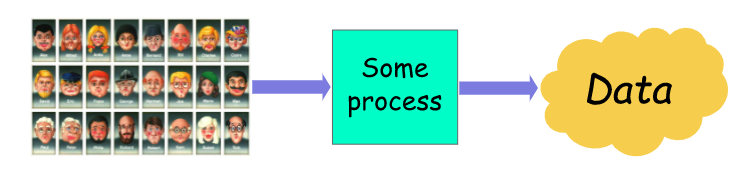
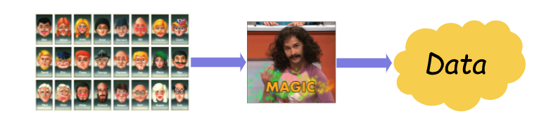
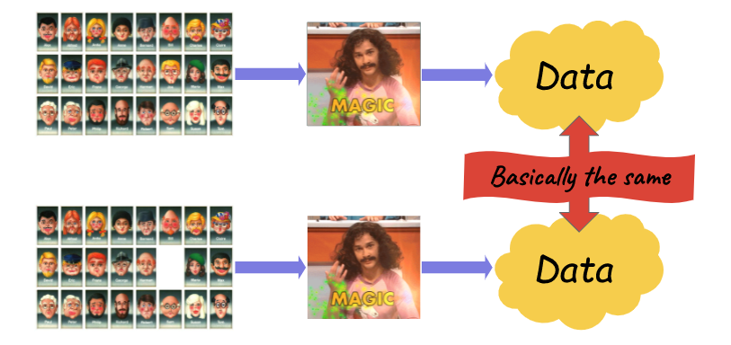

Traducción al español del post “Why differential privacy is awesome”
¿Cómo se puede publicar los datos de las personas protegiendo su privacidad? Esta pregunta está lejos de ser nueva. Las agencias de estadística se han enfrentado a esto durante décadas. Los informáticos han elaborado varios conceptos para plasmar esta idea. Sin embargo, ninguno de ellos ha sido muy satisfactorio: se demostró que todos estos conceptos se rompían en algunas circunstancias. También eran difíciles de aplicar sin destruir la utilidad de los datos.
Todo esto cambió en 2006, cuando cuatro investigadores introdujeron la privacidad diferencial. Este nuevo concepto adoptó un enfoque novedoso para definir la filtración de privacidad, uno que resultaría mucho más riguroso y fructífero. Entonces, ¿qué hace que la privacidad diferencial sea especial? ¿Cómo tuvo tanto éxito en los círculos académicos? ¿Por qué los gobiernos y las empresas tecnológicas comenzaron a adoptar la privacidad diferencial en la publicación de sus datos?
Este primer artículo de introducción a la privacidad diferencial intentará responder a esa pregunta. Primero, describiremos a grandes rasgos lo que hay detrás de este concepto tan exitoso. Luego, explicaremos por qué tiene tanto éxito y por qué es mucho mejor que todos los conceptos elaborados hasta ahora
La idea central detrás de la privacidad diferencial
Suponga que tiene un proceso que toma alguna base de datos como entrada y devuelve alguna salida.

Puede ser cualquier proceso. Por ejemplo:
- Un proceso que calcula algunas estadísticas (“dime cuántos usuarios tienen el pelo rojo”)
- Una estrategia de de-identificación (“eliminar nombres y los últimos tres dígitos de los códigos postales”)
- Un proceso de entrenamiento de machine learning (“construir un modelo para predecir a qué usuarios les gustan los gatos”)
- … Ya vas entendiendo la idea.
Para hacer que un proceso sea diferencialmente privado, generalmente debes modificarlo un poco. Por lo general, se agrega algo de aleatoriedad o ruido en algunos lugares. Lo que haga exactamente y cuánto ruido se agregue depende del proceso que se esté modificando. Voy a prescindir de esa parte y simplemente diré que tu proceso ahora está haciendo una “magia” desconocida.

Ahora, elimina a alguien de tu base de datos y ejecuta nuevamente el proceso. Si el nuevo proceso es diferencialmente privado, entonces las dos salidas son básicamente las mismas. Esto debe ser cierto sin importar a quién se elimine y qué base de datos tenía en primer lugar.

Por “básicamente lo mismo”, no me refiero a “se parece un poco”. En principio, recuerda que la magia que agregaste al proceso fue aleatoria. No siempre se obtiene el mismo resultado si se ejecuta el nuevo proceso varias veces. Entonces, ¿qué significa “básicamente lo mismo” en este contexto? Significa que puede obtener exactamente el mismo resultado de ambas bases de datos con una probabilidad similar.
¿Qué tiene que ver esto con la privacidad? Bueno, supongamos que eres una atacante que intenta averiguar si su objetivo está en los datos originales. Con mirar el resultado final, no se puede estar 100% seguro de nada. Claro, podría haber venido de una base de datos con su objetivo en ella. Pero también podría haber venido exactamente de la misma base de datos, sin su objetivo. Ambas opciones tienen una probabilidad similar, por lo que no hay mucho que puedas decir.
Es posible que hayas notado que esta definición no dice nada sobre cómo se ven los datos de salida. La privacidad diferencial no es una propiedad de los datos de salida. Es muy diferente, digamos, k-anonymity, una de las primeras definiciones de privacidad de datos. No puede mirar los datos de salida y determinar si satisface la privacidad diferencial. En cambio, la privacidad diferencial es una propiedad del proceso: debes saber cómo se generaron los datos para determinar si son diferencialmente privados.
A grandes rasgos es eso. Es un poco abstracto, pero no muy complicado. Entonces, ¿por qué todo el hype? ¿Qué hace a la privacidad diferencial tan increíble en comparación con definiciones más antiguas y sencillas?
¿Qué hace que la privacidad diferencial sea especial?
Los expertos en privacidad, especialmente en el mundo académico, están entusiasmados con la privacidad diferencial. Fue propuesto por primera vez por Cynthia Dwork, Frank McSherry, Kobbi Nissim y Adam Smith en 2006. Muy pronto, casi todos los investigadores que trabajaban en la anonimización comenzaron a construir algoritmos diferencialmente privados. Las empresas tecnológicas y los gobiernos lo están adoptando rápidamente. Entonces, ¿por qué todo el hype? En mi opinión existen tres razones principales.
1. Ya no es necesario el modelado de ataques
Todas las definiciones anteriores requerían algunas suposiciones sobre el atacante. Para elegir el concepto correcto, necesitas averiguar las capacidades y objetivos del atacante. ¿Cuánto conocimiento previo tienen los atacantes? ¿Qué datos auxiliares pueden usar? ¿Qué tipo de información quieren aprender?
Hacerlo en la práctica es difícil y muy propenso a errores. Responder a estas preguntas es muy complicado: en particular, es posible que no sepas exactamente lo que el atacante quiere o es capaz de hacer. Peor aún, puede haber incógnitas desconocidas: vectores de ataque que no hayas anticipado. Por esa razón, no podrías hacer declaraciones muy amplias con estas definiciones o conceptos de la vieja escuela. Tenías que hacer algunas suposiciones de las que no podías estar 100% seguro.
Por el contrario, cuando utilizas la privacidad diferencial, obtienes dos garantías impresionantes.
Usted protege cualquier tipo de información sobre un individuo. No importa lo que el atacante quiera hacer. Reidentificar su objetivo, saber si están en el conjunto de datos, deducir algún atributo sensible… Todas esas cosas están protegidas. Por lo tanto, no tienes que pensar en los objetivos de tu atacante. Funciona independientemente de lo que el atacante sepa sobre tus datos. Es posible que ya conozcan a algunas personas en la base de datos. Incluso podrían agregar algunos usuarios falsos a su sistema. Con privacidad diferencial, no importa. Los usuarios que el atacante aún no conoce están protegidos.
2. Puedes cuantificar la pérdida de privacidad
La privacidad diferencial, como los conceptos anteriores, viene con un parámetro numérico que se puede modificar. Sin embargo, hay una gran diferencia en el significado de ese parámetro. Tomemos como ejemplo K-anonymity. Nos dice que cada registro del conjunto de datos de salida “se parece” al menorca otros “k − 1” registros. Pero, ¿el valor de “k” nos dice algo sobre el nivel de protección?
La respuesta es… no mucho. No existe una relación clara entre el valor de “k” y el grado de privacidad del conjunto de datos. Así que elegir “k” es muy poco preciso y no se puede justificar de manera formal. El problema es aún peor con otros conceptos de la vieja escuela.
La privacidad diferencial es mucho mejor. Cuando la usas, puedes cuantificar la mayor ganancia de información posible por parte del atacante. El parámetro correspondiente, llamado ε, permite hacer afirmaciones formales. Supongamos que ε = 1.1. Entonces, puedes decir: “un atacante que cree que su objetivo está en el conjunto de datos con una probabilidad del 50 % puede aumentar su nivel de certeza hasta un 75 % como máximo”. Elegir el valor exacto de ε no es fácil, pero al menos se puede interpretar de manera formal.
¿Y recuerdas el punto anterior sobre el modelado de ataques? Significa que puedes cambiar esta declaración de muchas maneras. Puede reemplazar “su objetivo es el conjunto de datos” por cualquier cosa sobre un individuo. Y puede agregar “no importa lo que el atacante sepa” si desea ser más preciso. En resumen, todo esto hace que la privacidad diferencial sea mucho más fuerte que todas las definiciones anteriores.
3. Puedes elaborar múltiples mecanismos
Supongamos que tienes algunos datos. Quieres compartirlos con Alex y con Brinn, de forma anónima. Confías en Alex y en Brinn por igual, así que utilizas la misma definición de privacidad para ambos. No les interesan los mismos aspectos de los datos, así que les das dos versiones diferentes de tus datos. Ambas versiones son “anónimas”, según la definición que hayas elegido.
¿Qué ocurre si Alex y Brinn deciden conspirar y comparar los datos que les has dado? ¿La unión de las dos versiones anonimizadas seguirá siendo anónima? Resulta que para la mayoría de las definiciones de privacidad, este no es el caso. Si juntas dos versiones k-anónimas de los mismos datos, el resultado no será k-anónimo. Así que si Alex y Brinn colaboran, podrían ser capaces de reidentificar a los usuarios por su cuenta… ¡O incluso reconstruir todos los datos originales! Eso no es una buena noticia.
Con la privacidad diferencial, puedes evitar este modo de fallo. Supongamos que das datos con privacidad diferencial a Alex y Brinn. Cada vez, usaste un parámetro de ε. Entonces, si conspiran, los datos resultantes siguen estando protegidos por la privacidad diferencial. El nivel de privacidad es ahora más débil: el parámetro pasa a ser 2ε. Así que siguen ganando algo de información, pero ahora se puede cuantificar cuánta. Esta propiedad se llama composición.
Este escenario suena un poco improbable, pero la composición es super útil en la práctica. Las organizaciones suelen querer hacer muchas cosas con los datos. Publicar estadísticas, liberar una versión anónima, entrenar algoritmos de aprendizaje automático… La composición es una forma de mantener el control del nivel de riesgo a medida que aparecen nuevos casos de uso y los procesos evolucionan.
Conclusión
Espero que la intuición básica de la privacidad diferencial esté cristalina. Si recuerdas una sola cosa, que sea este resumen de una línea: la incertidumbre en el proceso significa incertidumbre para el atacante, lo que significa mejor privacidad.
También espero que ahora te preguntes cómo funciona realmente. ¿Qué se esconde detrás de esta magia que hace que todo sea seguro y privado? ¿Por qué la privacidad diferencial tiene todas las increíbles propiedades que he mencionado? Este es el tema exacto del siguiente artículo de esta serie, que lo explica con más detalle sin dejar de lado las matemáticas pesadas.
El autor original de este post es Damien Desfontaine, en Twitter como @TedOnPrivacy, y el motivo principal que me llevó a traducir la publicación original al español fue el aprendizaje y aportar contenido a la comunidad hispana de Privacidad Diferencial.